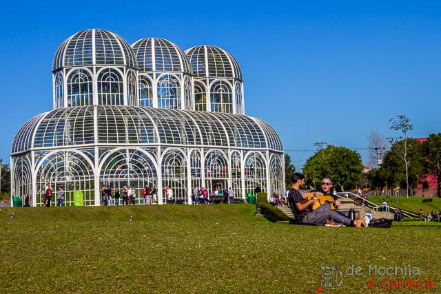

Um dos pontos turísticos mais iconicos de Curitiba
O Jardim Botânico de Curitiba, oficialmente chamado Jardim Botânico Francisca Maria Garfunkel Rischbieter, é um dos principais cartões-postais da capital paranaense. Inaugurado em 1991, o local é uma referência em turismo e um símbolo de preservação ambiental, sendo amado tanto por moradores quanto por turistas.
O destaque do Jardim Botânico é a estufa de vidro, inspirada nos palácios de cristal europeus. Essa estrutura abriga diversas espécies de plantas tropicais e exóticas, oferecendo um ambiente ideal para quem deseja contemplar a natureza e conhecer a rica flora do Brasil. Ao redor da estufa, há jardins geométricos que atraem fotógrafos e visitantes, especialmente pela beleza simétrica que eles proporcionam.
Além da estufa, o Jardim Botânico conta com o Museu Botânico, onde há exposições científicas e educacionais voltadas para a preservação da biodiversidade. O parque também oferece trilhas ecológicas, fontes, lagos e espaços para relaxamento, sendo um excelente local para passeios tranquilos, piqueniques ou atividades ao ar livre.
O Jardim Botânico não é apenas um refúgio verde em meio à cidade, mas também um ponto de encontro cultural e científico. Ele representa a harmonia entre o urbanismo de Curitiba e a preservação ambiental, sendo um destino imperdível para quem visita a cidade.
